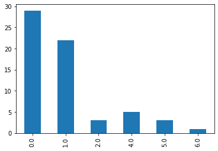

A section title¶
[1]:
%%capture
from auviewer.server import *
environment = 'lab'
if environment == 'local':
setDataPath('/home/gwelter/data/med_local')
p = loadProject(2)
elif environment == 'lab':
setDataPath('/home/auvdata')
p = loadProject(1)
[9]:
import pandas as pd
import numpy as np
import matplotlib.pyplot as plt
from IPython.core.display import display, HTML
[14]:
#individualAnnotationSets = [10,15]+[*range(16,22)]+[*range(28,34)]
individualAnnotationSets = [*range(28,34)]
individualAnnotationSets
[14]:
[28, 29, 30, 31, 32, 33]
[15]:
display(p.getAnnotations(pattern_set_id=individualAnnotationSets))
| file_id | filename | user_id | user_email | user_firstname | user_lastname | pattern_set_id | pattern_id | series | left | right | top | bottom | label | created | pattern_identifier | |
|---|---|---|---|---|---|---|---|---|---|---|---|---|---|---|---|---|
| 0 | 44 | 20191112_1903642_1927237.h5 | 11 | mhra@pitt.edu | Marilyn | Hravnak | 28 | 14804 | /data/numerics/SpO₂.SpO₂:value | 1.530316e+09 | 1.530317e+09 | None | None | {"confidence":"-1","notes":"I lean towards art... | 2020-09-29 22:04:47 | 1_44_/data/numerics/SpO₂.SpO₂:value_1530316251... |
| 1 | 29 | 20190523_1143071_1740434.h5 | 11 | mhra@pitt.edu | Marilyn | Hravnak | 28 | 14805 | /data/numerics/SpO₂T.SpO₂T:value | 1.500648e+09 | 1.500649e+09 | None | None | {"confidence":"3","notes":"I think real the ec... | 2020-09-29 22:07:05 | 1_29_/data/numerics/SpO₂T.SpO₂T:value_15006481... |
| 2 | 7 | 20190523_1369811_1829132.h5 | 11 | mhra@pitt.edu | Marilyn | Hravnak | 28 | 14806 | /data/numerics/SpO₂.SpO₂:value | 1.509856e+09 | 1.509858e+09 | None | None | {"confidence":"3","notes":"I think real the ec... | 2020-09-29 22:11:31 | 1_7_/data/numerics/SpO₂.SpO₂:value_1509855814.... |
| 3 | 51 | 20190523_1627175_1430807.h5 | 11 | mhra@pitt.edu | Marilyn | Hravnak | 28 | 14807 | /data/numerics/SpO₂.SpO₂:value | 1.496045e+09 | 1.496045e+09 | None | None | {"confidence":"3","notes":"real the ecg and pl... | 2020-09-29 22:15:30 | 1_51_/data/numerics/SpO₂.SpO₂:value_1496045186... |
| 4 | 37 | 20190523_1707728_1792754.h5 | 11 | mhra@pitt.edu | Marilyn | Hravnak | 28 | 14808 | /data/numerics/SpO₂T.SpO₂T:value | 1.490488e+09 | 1.490489e+09 | None | None | {"confidence":"-3","notes":"i think likely art... | 2020-09-29 22:18:25 | 1_37_/data/numerics/SpO₂T.SpO₂T:value_14904883... |
| ... | ... | ... | ... | ... | ... | ... | ... | ... | ... | ... | ... | ... | ... | ... | ... | ... |
| 200 | 34 | 20190805_1579325_1573490.h5 | 12 | tdp20@pitt.edu | Tiffany | Pellathy | 30 | 14880 | /data/numerics/SpO₂.SpO₂:value | 1.509380e+09 | 1.509381e+09 | None | None | {"confidence":"-1","notes":"pleth waveform qua... | 2020-10-16 16:33:53 | 1_34_/data/numerics/SpO₂.SpO₂:value_1509380443... |
| 201 | 23 | 20190805_1746688_1212931.h5 | 12 | tdp20@pitt.edu | Tiffany | Pellathy | 30 | 14881 | /data/numerics/SpO₂.SpO₂:value | 1.500293e+09 | 1.500293e+09 | None | None | {"confidence":"3","notes":""} | 2020-10-16 16:37:55 | 1_23_/data/numerics/SpO₂.SpO₂:value_1500292697... |
| 202 | 26 | 20190805_1871139_1633671.h5 | 12 | tdp20@pitt.edu | Tiffany | Pellathy | 30 | 14882 | /data/numerics/SpO₂.SpO₂:value | 1.514014e+09 | 1.514014e+09 | None | None | {"confidence":"3","notes":""} | 2020-10-16 16:42:01 | 1_26_/data/numerics/SpO₂.SpO₂:value_1514013602... |
| 203 | 45 | 20191112_1001456_1716760.h5 | 12 | tdp20@pitt.edu | Tiffany | Pellathy | 30 | 14883 | /data/numerics/SpO₂T.SpO₂T:value | 1.501160e+09 | 1.501161e+09 | None | None | {"confidence":"3","notes":""} | 2020-10-16 16:46:33 | 1_45_/data/numerics/SpO₂T.SpO₂T:value_15011602... |
| 204 | 47 | 20191112_1177815_1697161.h5 | 12 | tdp20@pitt.edu | Tiffany | Pellathy | 30 | 14884 | /data/numerics/SpO₂.SpO₂:value | 1.528031e+09 | 1.528032e+09 | None | None | {"confidence":"-2","notes":""} | 2020-10-16 16:50:42 | 1_47_/data/numerics/SpO₂.SpO₂:value_1528031076... |
205 rows × 16 columns
[16]:
%%capture
a = p.getAnnotations(pattern_set_id=individualAnnotationSets)
# Rename the label column
a.rename(columns = {'label': 'annotation_label'}, inplace = True)
# Label Confidence Colummn
# Drop nan's (TODO: Need to have these annotations corrected)
a['label_confidence'] = a['annotation_label'].str.extract(r'^\{"confidence":"([^"]*)')
a['label_confidence'] = pd.to_numeric(a['label_confidence'], errors='coerce')
a = a.dropna(subset=['label_confidence'])
a['label_confidence'] = a['label_confidence'].astype(int)
# Label Notes Column
a['label_notes'] = a['annotation_label'].str.extract(r'"notes":"([^"]*)')
# Drop duplicates (from repeat clicking Create in the annotation window)
a = a.drop_duplicates(subset=('file_id', 'user_id', 'pattern_id', 'series', 'left', 'right'), ignore_index=True)
a.sort_values(by='pattern_identifier', inplace=True, ignore_index=True)
# Will hold absolute difference (for 2-annotation patterns) and classification per our adjudication process (1, 2, or 3)
a['abs_confidence_diff'] = np.nan
a['c_classification'] = np.nan
a['label'] = ''
# Classify into c1, c2, c3 per our adjudication process
def classify(row):
pattern_annotations = a[a['pattern_identifier'] == row['pattern_identifier']]
if pattern_annotations.shape[0] == 2:
val0 = pattern_annotations.iloc[0]['label_confidence']
val1 = pattern_annotations.iloc[1]['label_confidence']
a.loc[a['pattern_identifier'] == row.loc['pattern_identifier'], 'abs_confidence_diff'] = abs(val0-val1)
if val0 * val1 <= 0:
a.loc[a['pattern_identifier'] == row.loc['pattern_identifier'], 'c_classification'] = 3
a.loc[a['pattern_identifier'] == row.loc['pattern_identifier'], 'label'] = f"{pattern_annotations.iloc[0]['user_email']}\n{pattern_annotations.iloc[0]['annotation_label']}\n\n{pattern_annotations.iloc[1]['user_email']}\n{pattern_annotations.iloc[1]['annotation_label']}"
elif val0 * val1 < 3:
a.loc[a['pattern_identifier'] == row.loc['pattern_identifier'], 'c_classification'] = 2
elif val0 * val1 >= 3:
a.loc[a['pattern_identifier'] == row.loc['pattern_identifier'], 'c_classification'] = 1
a.apply(classify, axis=1);
[17]:
display(a)
| file_id | filename | user_id | user_email | user_firstname | user_lastname | pattern_set_id | pattern_id | series | left | ... | top | bottom | annotation_label | created | pattern_identifier | label_confidence | label_notes | abs_confidence_diff | c_classification | label | |
|---|---|---|---|---|---|---|---|---|---|---|---|---|---|---|---|---|---|---|---|---|---|
| 0 | 10 | 20190523_1628452_1284339.h5 | 6 | pinsky@pitt.edu | Michael | Pinsky | 33 | 15323 | /data/numerics/HR.HR:value | 1.524480e+09 | ... | None | None | {"confidence":"0","notes":""} | 2020-10-06 15:38:38 | 1_10_/data/numerics/HR.HR:value_1524479512.506... | 0 | NaN | NaN | ||
| 1 | 10 | 20190523_1628452_1284339.h5 | 11 | mhra@pitt.edu | Marilyn | Hravnak | 28 | 15002 | /data/numerics/RR.RR:value | 1.524533e+09 | ... | None | None | {"confidence":"2","notes":"probably real ecg s... | 2020-10-01 13:07:23 | 1_10_/data/numerics/RR.RR:value_1524533342.906... | 2 | probably real ecg signal stable but no resp wa... | 0.0 | 1.0 | |
| 2 | 10 | 20190523_1628452_1284339.h5 | 6 | pinsky@pitt.edu | Michael | Pinsky | 33 | 15137 | /data/numerics/RR.RR:value | 1.524533e+09 | ... | None | None | {"confidence":"2","notes":"good ecg signal. L... | 2020-10-06 14:56:37 | 1_10_/data/numerics/RR.RR:value_1524533342.906... | 2 | good ecg signal. Low RR is rarely a reason fo... | 0.0 | 1.0 | |
| 3 | 10 | 20190523_1628452_1284339.h5 | 6 | pinsky@pitt.edu | Michael | Pinsky | 33 | 15158 | /data/numerics/RR.RR:value | 1.524628e+09 | ... | None | None | {"confidence":"2","notes":"good ecg signal"} | 2020-10-06 15:30:15 | 1_10_/data/numerics/RR.RR:value_1524627805.882... | 2 | good ecg signal | NaN | NaN | |
| 4 | 11 | 20190523_1397747_1900167.h5 | 11 | mhra@pitt.edu | Marilyn | Hravnak | 28 | 15193 | /data/numerics/HR.HR:value | 1.509772e+09 | ... | None | None | {"confidence":"3","notes":"real corroborated b... | 2020-10-01 18:36:01 | 1_11_/data/numerics/HR.HR:value_1509772441.697... | 3 | real corroborated by ecg wave frequency | NaN | NaN | |
| ... | ... | ... | ... | ... | ... | ... | ... | ... | ... | ... | ... | ... | ... | ... | ... | ... | ... | ... | ... | ... | ... |
| 199 | 7 | 20190523_1369811_1829132.h5 | 11 | mhra@pitt.edu | Marilyn | Hravnak | 28 | 14821 | /data/numerics/SpO₂.SpO₂:value | 1.509861e+09 | ... | None | None | {"confidence":"3","notes":"i think real. pleth... | 2020-09-30 13:47:37 | 1_7_/data/numerics/SpO₂.SpO₂:value_1509860593.... | 3 | i think real. pleth not awful. resp waves show... | 0.0 | 1.0 | |
| 200 | 7 | 20190523_1369811_1829132.h5 | 6 | pinsky@pitt.edu | Michael | Pinsky | 33 | 14973 | /data/numerics/SpO₂.SpO₂:value | 1.510305e+09 | ... | None | None | {"confidence":"2","notes":"Initially real unti... | 2020-10-06 14:42:16 | 1_7_/data/numerics/SpO₂.SpO₂:value_1510304815.... | 2 | Initially real until 4:07:09 then some artifac... | 1.0 | 1.0 | |
| 201 | 7 | 20190523_1369811_1829132.h5 | 12 | tdp20@pitt.edu | Tiffany | Pellathy | 30 | 14868 | /data/numerics/SpO₂.SpO₂:value | 1.510305e+09 | ... | None | None | {"confidence":"3","notes":""} | 2020-10-16 13:17:51 | 1_7_/data/numerics/SpO₂.SpO₂:value_1510304815.... | 3 | 1.0 | 1.0 | ||
| 202 | 8 | 20190523_1133215_1572634.h5 | 11 | mhra@pitt.edu | Marilyn | Hravnak | 28 | 15190 | /data/numerics/HR.HR:value | 1.531059e+09 | ... | None | None | {"confidence":"2","notes":"real mostly corrobo... | 2020-10-01 18:28:08 | 1_8_/data/numerics/HR.HR:value_1531059007.62_1... | 2 | real mostly corroborated by ecg wave frequency... | NaN | NaN | |
| 203 | 8 | 20190523_1133215_1572634.h5 | 6 | pinsky@pitt.edu | Michael | Pinsky | 33 | 15316 | /data/numerics/HR.HR:value | 1.531060e+09 | ... | None | None | {"confidence":"3","notes":""} | 2020-10-06 15:34:30 | 1_8_/data/numerics/HR.HR:value_1531059785.859_... | 3 | NaN | NaN |
204 rows × 21 columns
[24]:
a.value_counts(subset=['c_classification'])
[24]:
c_classification
1.0 98
3.0 22
2.0 6
dtype: int64
[23]:
a[a['c_classification']==3]
[23]:
| file_id | filename | user_id | user_email | user_firstname | user_lastname | pattern_set_id | pattern_id | series | left | ... | top | bottom | annotation_label | created | pattern_identifier | label_confidence | label_notes | abs_confidence_diff | c_classification | label | |
|---|---|---|---|---|---|---|---|---|---|---|---|---|---|---|---|---|---|---|---|---|---|
| 31 | 17 | 20190805_1157669_1498169.h5 | 6 | pinsky@pitt.edu | Michael | Pinsky | 33 | 15146 | /data/numerics/RR.RR:value | 1.539927e+09 | ... | None | None | {"confidence":"2","notes":"real alert but into... | 2020-10-06 15:03:04 | 1_17_/data/numerics/RR.RR:value_1539926797.128... | 2 | real alert but into alert some minor transient... | 5.0 | 3.0 | pinsky@pitt.edu\n{"confidence":"2","notes":"re... |
| 32 | 17 | 20190805_1157669_1498169.h5 | 11 | mhra@pitt.edu | Marilyn | Hravnak | 28 | 15011 | /data/numerics/RR.RR:value | 1.539927e+09 | ... | None | None | {"confidence":"-3","notes":"artifact due to re... | 2020-10-01 13:31:46 | 1_17_/data/numerics/RR.RR:value_1539926797.128... | -3 | artifact due to resp wave signal height too sm... | 5.0 | 3.0 | pinsky@pitt.edu\n{"confidence":"2","notes":"re... |
| 38 | 23 | 20190805_1746688_1212931.h5 | 6 | pinsky@pitt.edu | Michael | Pinsky | 33 | 15339 | /data/numerics/HR.HR:value | 1.499447e+09 | ... | None | None | {"confidence":"-2","notes":""} | 2020-10-06 15:48:40 | 1_23_/data/numerics/HR.HR:value_1499446638.17_... | -2 | 4.0 | 3.0 | pinsky@pitt.edu\n{"confidence":"-2","notes":""... | |
| 39 | 23 | 20190805_1746688_1212931.h5 | 11 | mhra@pitt.edu | Marilyn | Hravnak | 28 | 15174 | /data/numerics/HR.HR:value | 1.499447e+09 | ... | None | None | {"confidence":"2","notes":"real corroborated b... | 2020-10-01 17:26:00 | 1_23_/data/numerics/HR.HR:value_1499446638.17_... | 2 | real corroborated by ecg wave rate best seen i... | 4.0 | 3.0 | pinsky@pitt.edu\n{"confidence":"-2","notes":""... |
| 64 | 27 | 20190523_1628905_1778103.h5 | 11 | mhra@pitt.edu | Marilyn | Hravnak | 28 | 15003 | /data/numerics/RR.RR:value | 1.527575e+09 | ... | None | None | {"confidence":"-1","notes":"I am calling artif... | 2020-10-01 13:13:07 | 1_27_/data/numerics/RR.RR:value_1527575330.44_... | -1 | I am calling artifact due to the terrible inst... | 4.0 | 3.0 | mhra@pitt.edu\n{"confidence":"-1","notes":"I a... |
| 65 | 27 | 20190523_1628905_1778103.h5 | 6 | pinsky@pitt.edu | Michael | Pinsky | 33 | 15138 | /data/numerics/RR.RR:value | 1.527575e+09 | ... | None | None | {"confidence":"3","notes":""} | 2020-10-06 14:57:09 | 1_27_/data/numerics/RR.RR:value_1527575330.44_... | 3 | 4.0 | 3.0 | mhra@pitt.edu\n{"confidence":"-1","notes":"I a... | |
| 78 | 29 | 20190523_1143071_1740434.h5 | 12 | tdp20@pitt.edu | Tiffany | Pellathy | 30 | 14866 | /data/numerics/SpO₂T.SpO₂T:value | 1.500650e+09 | ... | None | None | {"confidence":"1","notes":"pleth T waveform is... | 2020-10-16 11:49:30 | 1_29_/data/numerics/SpO₂T.SpO₂T:value_15006496... | 1 | pleth T waveform is poor quality, thus less co... | 4.0 | 3.0 | tdp20@pitt.edu\n{"confidence":"1","notes":"ple... |
| 79 | 29 | 20190523_1143071_1740434.h5 | 6 | pinsky@pitt.edu | Michael | Pinsky | 33 | 14971 | /data/numerics/SpO₂T.SpO₂T:value | 1.500650e+09 | ... | None | None | {"confidence":"-3","notes":""} | 2020-10-06 14:40:28 | 1_29_/data/numerics/SpO₂T.SpO₂T:value_15006496... | -3 | 4.0 | 3.0 | tdp20@pitt.edu\n{"confidence":"1","notes":"ple... | |
| 91 | 34 | 20190805_1579325_1573490.h5 | 6 | pinsky@pitt.edu | Michael | Pinsky | 33 | 15148 | /data/numerics/RR.RR:value | 1.506998e+09 | ... | None | None | {"confidence":"2","notes":"this is intermitten... | 2020-10-06 15:04:46 | 1_34_/data/numerics/RR.RR:value_1506998166.091... | 2 | this is intermittent apnea | 5.0 | 3.0 | pinsky@pitt.edu\n{"confidence":"2","notes":"th... |
| 92 | 34 | 20190805_1579325_1573490.h5 | 11 | mhra@pitt.edu | Marilyn | Hravnak | 28 | 15013 | /data/numerics/RR.RR:value | 1.506998e+09 | ... | None | None | {"confidence":"-3","notes":"artifact resp wave... | 2020-10-01 13:37:49 | 1_34_/data/numerics/RR.RR:value_1506998166.091... | -3 | artifact resp wave magnitude too low to captur... | 5.0 | 3.0 | pinsky@pitt.edu\n{"confidence":"2","notes":"th... |
| 95 | 34 | 20190805_1579325_1573490.h5 | 6 | pinsky@pitt.edu | Michael | Pinsky | 33 | 14963 | /data/numerics/SpO₂.SpO₂:value | 1.508014e+09 | ... | None | None | {"confidence":"2","notes":""} | 2020-10-06 14:33:08 | 1_34_/data/numerics/SpO₂.SpO₂:value_1508014035... | 2 | 4.0 | 3.0 | pinsky@pitt.edu\n{"confidence":"2","notes":""}... | |
| 96 | 34 | 20190805_1579325_1573490.h5 | 11 | mhra@pitt.edu | Marilyn | Hravnak | 28 | 14828 | /data/numerics/SpO₂.SpO₂:value | 1.508014e+09 | ... | None | None | {"confidence":"-2","notes":"I think this is ar... | 2020-09-30 17:55:32 | 1_34_/data/numerics/SpO₂.SpO₂:value_1508014035... | -2 | I think this is artifact there seems to be som... | 4.0 | 3.0 | pinsky@pitt.edu\n{"confidence":"2","notes":""}... |
| 109 | 37 | 20190523_1707728_1792754.h5 | 11 | mhra@pitt.edu | Marilyn | Hravnak | 28 | 15005 | /data/numerics/RR.RR:value | 1.489917e+09 | ... | None | None | {"confidence":"-2","notes":"hmm I am gong to c... | 2020-10-01 13:19:57 | 1_37_/data/numerics/RR.RR:value_1489917281.901... | -2 | hmm I am gong to call artifact because the RR ... | 4.0 | 3.0 | mhra@pitt.edu\n{"confidence":"-2","notes":"hmm... |
| 110 | 37 | 20190523_1707728_1792754.h5 | 6 | pinsky@pitt.edu | Michael | Pinsky | 33 | 15140 | /data/numerics/RR.RR:value | 1.489917e+09 | ... | None | None | {"confidence":"2","notes":""} | 2020-10-06 14:58:12 | 1_37_/data/numerics/RR.RR:value_1489917281.901... | 2 | 4.0 | 3.0 | mhra@pitt.edu\n{"confidence":"-2","notes":"hmm... | |
| 134 | 45 | 20191112_1001456_1716760.h5 | 11 | mhra@pitt.edu | Marilyn | Hravnak | 28 | 14830 | /data/numerics/SpO₂.SpO₂:value | 1.500909e+09 | ... | None | None | {"confidence":"-2","notes":"hmmm. i think most... | 2020-09-30 18:00:49 | 1_45_/data/numerics/SpO₂.SpO₂:value_1500908802... | -2 | hmmm. i think mostly artifact as the leth sign... | 5.0 | 3.0 | mhra@pitt.edu\n{"confidence":"-2","notes":"hmm... |
| 135 | 45 | 20191112_1001456_1716760.h5 | 6 | pinsky@pitt.edu | Michael | Pinsky | 33 | 14965 | /data/numerics/SpO₂.SpO₂:value | 1.500909e+09 | ... | None | None | {"confidence":"3","notes":""} | 2020-10-06 14:34:33 | 1_45_/data/numerics/SpO₂.SpO₂:value_1500908802... | 3 | 5.0 | 3.0 | mhra@pitt.edu\n{"confidence":"-2","notes":"hmm... | |
| 157 | 51 | 20190523_1627175_1430807.h5 | 11 | mhra@pitt.edu | Marilyn | Hravnak | 28 | 15001 | /data/numerics/RR.RR:value | 1.494873e+09 | ... | None | None | {"confidence":"-1","notes":"I wavered between ... | 2020-10-01 13:02:42 | 1_51_/data/numerics/RR.RR:value_1494873381.974... | -1 | I wavered between plus 1 and minus 1. was lean... | 1.0 | 3.0 | mhra@pitt.edu\n{"confidence":"-1","notes":"I w... |
| 158 | 51 | 20190523_1627175_1430807.h5 | 6 | pinsky@pitt.edu | Michael | Pinsky | 33 | 15136 | /data/numerics/RR.RR:value | 1.494873e+09 | ... | None | None | {"confidence":"0","notes":"no ecg signal and p... | 2020-10-06 14:55:37 | 1_51_/data/numerics/RR.RR:value_1494873381.974... | 0 | no ecg signal and pleth variability difficult ... | 1.0 | 3.0 | mhra@pitt.edu\n{"confidence":"-1","notes":"I w... |
| 185 | 56 | 20190523_1769089_1083631.h5 | 11 | mhra@pitt.edu | Marilyn | Hravnak | 28 | 14824 | /data/numerics/SpO₂.SpO₂:value | 1.510359e+09 | ... | None | None | {"confidence":"-3","notes":"artifact due to\n1... | 2020-09-30 17:07:39 | 1_56_/data/numerics/SpO₂.SpO₂:value_1510358753... | -3 | artifact due to\n1. problem with pleth signal ... | 6.0 | 3.0 | mhra@pitt.edu\n{"confidence":"-3","notes":"art... |
| 186 | 56 | 20190523_1769089_1083631.h5 | 6 | pinsky@pitt.edu | Michael | Pinsky | 33 | 14959 | /data/numerics/SpO₂.SpO₂:value | 1.510359e+09 | ... | None | None | {"confidence":"3","notes":"excellent pleth sig... | 2020-10-06 14:27:33 | 1_56_/data/numerics/SpO₂.SpO₂:value_1510358753... | 3 | excellent pleth signal equal ECG and amplitude... | 6.0 | 3.0 | mhra@pitt.edu\n{"confidence":"-3","notes":"art... |
| 194 | 6 | 20190523_1954542_1779418.h5 | 11 | mhra@pitt.edu | Marilyn | Hravnak | 28 | 15164 | /data/numerics/HR.HR:value | 1.493941e+09 | ... | None | None | {"confidence":"0","notes":"this is both real a... | 2020-10-01 13:42:24 | 1_6_/data/numerics/HR.HR:value_1493940531.666_... | 0 | this is both real and artifact. real at the st... | 1.0 | 3.0 | mhra@pitt.edu\n{"confidence":"0","notes":"this... |
| 195 | 6 | 20190523_1954542_1779418.h5 | 6 | pinsky@pitt.edu | Michael | Pinsky | 33 | 15329 | /data/numerics/HR.HR:value | 1.493941e+09 | ... | None | None | {"confidence":"1","notes":"pleth = hr but poor... | 2020-10-06 15:42:26 | 1_6_/data/numerics/HR.HR:value_1493940531.666_... | 1 | pleth = hr but poor pleth signal | 1.0 | 3.0 | mhra@pitt.edu\n{"confidence":"0","notes":"this... |
22 rows × 21 columns
[22]:
print(f'Annotations: {a.shape[0]}')
print(f"Unique patterns: {a['pattern_identifier'].drop_duplicates().shape[0]}")
pda = a['pattern_identifier'].value_counts().value_counts().iloc[0]
print(f"Patterns with dual annotations: {pda} patterns ({pda*2} annotations)")
print("Pattern Counts by Adjudication Classification")
display(a.drop_duplicates(subset='pattern_identifier')['c_classification'].value_counts().sort_index())
print('Pattern Counts by Absolute Difference:')
dc = a.drop_duplicates(subset='pattern_identifier')['abs_confidence_diff'].value_counts().sort_index()
display(dc)
display(dc.plot.bar())
Annotations: 204
Unique patterns: 141
Patterns with dual annotations: 78 patterns (156 annotations)
Pattern Counts by Adjudication Classification
1.0 49
2.0 3
3.0 11
Name: c_classification, dtype: int64
Pattern Counts by Absolute Difference:
0.0 29
1.0 22
2.0 3
4.0 5
5.0 3
6.0 1
Name: abs_confidence_diff, dtype: int64
<AxesSubplot:>

[25]:
# Create a pattern set
patternset = p.createPatternSet('Committee Adjudication 10/16/2020')
[28]:
patternset.assignToUsers(2)
[29]:
adjudicationPatterns = a[a['c_classification'] == 3].drop_duplicates(subset='pattern_identifier')
display(adjudicationPatterns)
| file_id | filename | user_id | user_email | user_firstname | user_lastname | pattern_set_id | pattern_id | series | left | ... | top | bottom | annotation_label | created | pattern_identifier | label_confidence | label_notes | abs_confidence_diff | c_classification | label | |
|---|---|---|---|---|---|---|---|---|---|---|---|---|---|---|---|---|---|---|---|---|---|
| 31 | 17 | 20190805_1157669_1498169.h5 | 6 | pinsky@pitt.edu | Michael | Pinsky | 33 | 15146 | /data/numerics/RR.RR:value | 1.539927e+09 | ... | None | None | {"confidence":"2","notes":"real alert but into... | 2020-10-06 15:03:04 | 1_17_/data/numerics/RR.RR:value_1539926797.128... | 2 | real alert but into alert some minor transient... | 5.0 | 3.0 | pinsky@pitt.edu\n{"confidence":"2","notes":"re... |
| 38 | 23 | 20190805_1746688_1212931.h5 | 6 | pinsky@pitt.edu | Michael | Pinsky | 33 | 15339 | /data/numerics/HR.HR:value | 1.499447e+09 | ... | None | None | {"confidence":"-2","notes":""} | 2020-10-06 15:48:40 | 1_23_/data/numerics/HR.HR:value_1499446638.17_... | -2 | 4.0 | 3.0 | pinsky@pitt.edu\n{"confidence":"-2","notes":""... | |
| 64 | 27 | 20190523_1628905_1778103.h5 | 11 | mhra@pitt.edu | Marilyn | Hravnak | 28 | 15003 | /data/numerics/RR.RR:value | 1.527575e+09 | ... | None | None | {"confidence":"-1","notes":"I am calling artif... | 2020-10-01 13:13:07 | 1_27_/data/numerics/RR.RR:value_1527575330.44_... | -1 | I am calling artifact due to the terrible inst... | 4.0 | 3.0 | mhra@pitt.edu\n{"confidence":"-1","notes":"I a... |
| 78 | 29 | 20190523_1143071_1740434.h5 | 12 | tdp20@pitt.edu | Tiffany | Pellathy | 30 | 14866 | /data/numerics/SpO₂T.SpO₂T:value | 1.500650e+09 | ... | None | None | {"confidence":"1","notes":"pleth T waveform is... | 2020-10-16 11:49:30 | 1_29_/data/numerics/SpO₂T.SpO₂T:value_15006496... | 1 | pleth T waveform is poor quality, thus less co... | 4.0 | 3.0 | tdp20@pitt.edu\n{"confidence":"1","notes":"ple... |
| 91 | 34 | 20190805_1579325_1573490.h5 | 6 | pinsky@pitt.edu | Michael | Pinsky | 33 | 15148 | /data/numerics/RR.RR:value | 1.506998e+09 | ... | None | None | {"confidence":"2","notes":"this is intermitten... | 2020-10-06 15:04:46 | 1_34_/data/numerics/RR.RR:value_1506998166.091... | 2 | this is intermittent apnea | 5.0 | 3.0 | pinsky@pitt.edu\n{"confidence":"2","notes":"th... |
| 95 | 34 | 20190805_1579325_1573490.h5 | 6 | pinsky@pitt.edu | Michael | Pinsky | 33 | 14963 | /data/numerics/SpO₂.SpO₂:value | 1.508014e+09 | ... | None | None | {"confidence":"2","notes":""} | 2020-10-06 14:33:08 | 1_34_/data/numerics/SpO₂.SpO₂:value_1508014035... | 2 | 4.0 | 3.0 | pinsky@pitt.edu\n{"confidence":"2","notes":""}... | |
| 109 | 37 | 20190523_1707728_1792754.h5 | 11 | mhra@pitt.edu | Marilyn | Hravnak | 28 | 15005 | /data/numerics/RR.RR:value | 1.489917e+09 | ... | None | None | {"confidence":"-2","notes":"hmm I am gong to c... | 2020-10-01 13:19:57 | 1_37_/data/numerics/RR.RR:value_1489917281.901... | -2 | hmm I am gong to call artifact because the RR ... | 4.0 | 3.0 | mhra@pitt.edu\n{"confidence":"-2","notes":"hmm... |
| 134 | 45 | 20191112_1001456_1716760.h5 | 11 | mhra@pitt.edu | Marilyn | Hravnak | 28 | 14830 | /data/numerics/SpO₂.SpO₂:value | 1.500909e+09 | ... | None | None | {"confidence":"-2","notes":"hmmm. i think most... | 2020-09-30 18:00:49 | 1_45_/data/numerics/SpO₂.SpO₂:value_1500908802... | -2 | hmmm. i think mostly artifact as the leth sign... | 5.0 | 3.0 | mhra@pitt.edu\n{"confidence":"-2","notes":"hmm... |
| 157 | 51 | 20190523_1627175_1430807.h5 | 11 | mhra@pitt.edu | Marilyn | Hravnak | 28 | 15001 | /data/numerics/RR.RR:value | 1.494873e+09 | ... | None | None | {"confidence":"-1","notes":"I wavered between ... | 2020-10-01 13:02:42 | 1_51_/data/numerics/RR.RR:value_1494873381.974... | -1 | I wavered between plus 1 and minus 1. was lean... | 1.0 | 3.0 | mhra@pitt.edu\n{"confidence":"-1","notes":"I w... |
| 185 | 56 | 20190523_1769089_1083631.h5 | 11 | mhra@pitt.edu | Marilyn | Hravnak | 28 | 14824 | /data/numerics/SpO₂.SpO₂:value | 1.510359e+09 | ... | None | None | {"confidence":"-3","notes":"artifact due to\n1... | 2020-09-30 17:07:39 | 1_56_/data/numerics/SpO₂.SpO₂:value_1510358753... | -3 | artifact due to\n1. problem with pleth signal ... | 6.0 | 3.0 | mhra@pitt.edu\n{"confidence":"-3","notes":"art... |
| 194 | 6 | 20190523_1954542_1779418.h5 | 11 | mhra@pitt.edu | Marilyn | Hravnak | 28 | 15164 | /data/numerics/HR.HR:value | 1.493941e+09 | ... | None | None | {"confidence":"0","notes":"this is both real a... | 2020-10-01 13:42:24 | 1_6_/data/numerics/HR.HR:value_1493940531.666_... | 0 | this is both real and artifact. real at the st... | 1.0 | 3.0 | mhra@pitt.edu\n{"confidence":"0","notes":"this... |
11 rows × 21 columns
[30]:
#patternset.addPatterns(adjudicationPatterns)
[31]:
patternset.setShowByDefault(True)